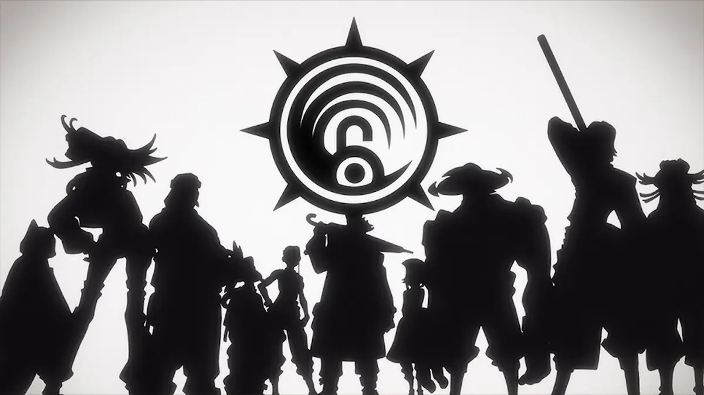

Action/Fantasy/Dystopian
Gachiakuta: Setting
by Kei Urana .Feb 12 2026

Gachiakuta takes place in a dystopian world where there exists a floating country-sized structure known as the Sphere (天界, Tenkai), which runs on a social caste system that divides the rich and wealthy society from the poor "tribesfolk" living around the outer perimeter—descended from notorious criminals and exiled by the upper-class—by way of a heavily-guarded wall. Both sides of the caste dump their trash and nwanted waste, as well as people convicted of any crime, down the "Pit", a never-ending expanses below the Sphere in which the Spherites (天界人, Tenkai Jin)—the inhabitants of the Sphere—deemed inhospitable to all forms of life.
Unbeknown to the Spherites, beyond the Pit and the "Border" (ボーダー, Bōdā) separating it from the Sphere lies the "Ground" (下界, Gekai), a lawless wasteland with a mostly toxic environment infested with the Spherites' waste due to the constant downpour of trash from the Sphere, its heavily polluted areas are often roamed about by Trash Beasts (斑獣, Han-jū), living creatures literally made of trash. Amongst its various inhabitants and wandering troublemakers—mostly survived being thrown down the Pit by the Spherites and has since made a thriving civilized network of towns—there exists the Cleaners (掃除屋, Sōjiya), a group of super-powered individuals known as "Givers" (人通者ギバー, Gibā) specialized with handling odd-jobs and exterminating Trash Beasts as conventional weaponry doesn't work on them due to its regenerative properties.
Each Giver has access to their respective Vital Instrument (人器, Jinki), powerful weapons converted from everyday objects by infusing them with the Giver's own capacity to generate Anima (思念, Shinen) from their body. Often the only thing capable of taking down Trash Beasts, Vital Instruments are usually the manifestation of a Giver's love and care for these treasured objects, allowing their Anima to awakened and make these worthless items valuable in combat. Additionally, the longer a Giver tends to their valued object with love and care, the more seasoned and better it becomes as a Vital Instrument, thus “improving its quality” and making it more powerful, as it also serves as a conduit for a Giver's own experience and ideology as a person. Amongst the many Vital Instruments used by the various Givers of the Ground, there also exist the Watchman Series (番人シリーズ, Bannin Shirīzu), a set of five unfathomably powerful Vital Instruments said to be connected to the Watchman (番人, Bannin)—a gigantic, incomprehensible being guarding the border between the Sphere and the Ground—and that usually require the wielder to have lost something in their life to use them without going insane from their power.
Plot

A young teenage boy named Rudo lives in the slums of a wealthy society among the "tribesfolk", a populati descended from criminals and exiled by society. Rudo detests the upper class's wastefulness, as they o dump anything deemed trash, including criminals, into a massive dump site below the town known as "The Pit". Rudo was told by his foster father Regto that his biological father was dumped into the Pit for a crime before Rudo was born. One day, after rummaging through a dump site, Rudo returns home to find Regto murdered. Apprehended at the scene, Rudo is immediately charged with murder despite being innocent, due to his status as a tribesman. Unable to escape his fate, Rudo swears revenge upon the people and is dumped into the Pit.
After being dumped into the Pit, Rudo awakens to find himself disoriented in a foul-smelling, endless landscape of trash. Rudo is then attacked by large beasts made of trash and fends them off until he is rescued by a man named Enjin. The man explains that he is not underground but has fallen to the surface from "The Sphere". After testing him and awakening his power as a "Giver", Enjin invites Rudo to join him as a "Cleaner". Enjin explains that the Cleaners are an organization of Givers who use the power of unique weapons known as "vital instruments" (人器, jinki) to hunt the trash beasts that attacked him. Rudo reluctantly accepts Enjin's offer to join the Cleaners, so long as it helps accomplish his goal of returning to the Sphere and enacting revenge on those who dumped him into the Pit.
Characters
Cleaners
Team Akuta
Rudo Surebrec (ルド・スレブレック, Rudo Sureburekku)
Voiced by: Aoi Ichikawa, Yō Taichi (young) (Japanese); Bryson Baugus, Dee Meo (young) (English)
A former Sphereite, as well as Regto's adopted son, whose false convictions led to his sentencing to The Pit. After being saved from a group of trash beasts, he joins the Cleaners as part of his plan to enact murderous vengeance on his accusers and the true culprit. His vital instrument consists of 3R, a pair of gloves from the Watchman series, which were given to him by Regto before his death. Rudo's gloves allow him to give life to any three objects he wields, which are mainly trash since items that are still in good condition are harder for him to use. He would turn them into weapons or tools, though they would crumble after they had served their purpose. Rudo can focus the anima energy from three separate items into one item, boosting that specific item's power and even changing its form.
Enjin (エンジン)
Voiced by: Katsuyuki Konishi (Japanese); Christopher Wehkamp (English)
A fellow member of the Cleaners who saves Rudo from a horde of trash beasts. He carries a vital instrument called Umbreaker, which takes the form of an umbrella. He is also the leader of Team Akuta, one of the teams that compose the Cleaners.
Zanka Nijiku (ザンカ・ニジク)
Voiced by: Yoshitsugu Matsuoka (Japanese); Corey Wilder (English)
A warrior Cleaner and master combatant, who was recruited by Enjin and part of Team Akuta. His vital instrument is a staff-like weapon named the Lovely Assistaff. He is from a noble family, who has a long-standing connection to the Hell Guards, a group of people who fight criminal Givers, and was initially trained to be a Hell Guard like his older siblings, but after a trainee named Hyo outmatched him and saw her as a real genius, he ran away and met Enjin. Enjin inspired him to become a Cleaner and to become strong enough to surpass geniuses.
Riyo Reaper (リヨウ・リーパー, Riyō Rīpā)
Voiced by: Yumiri Hanamori (Japanese); Katie Caruso (English)
A carefree, energetic, and outgoing member of the Cleaners whose vital instrument comes in the form of a pair of scissors called The Ripper. She is also a former hitman.
Shikage (シカゲ)
Voiced by: Nobuhiko Okamoto (Japanese); Ethan Condon (English)
An extremely reclusive and elusive Cleaner and member of Team Akuta. His unknown vital instrument acts as a barrier that protects their headquarters.
Team Eager
Tamsy Caines (タムジー・ケインズ, Tamujī Keinzu)
Voiced by: Mitsuki Saiga (Japanese); Adam Gibbs (English)
Tamsy is a seemingly kind senior member of the Cleaner team Eager. Using his vital instrument, Tokushin, a Distaff, he can create a "Net" of threads to trap a large numbe people, the more the opponent's struggle the more tangle the thread gets making it extremely difficult to escape.
Delmon Gates (デルモン・ゲイツ, Derumon Geitsu)
Voiced by: Masami Iwasaki (Japanese); Brent Mukai (English)
Delmon is a loud and passionate member of the Cleaner team Eager. Using his vital instrument, Thirst Quencher, he can control the water contents to attack the opponents that absorb water, the larger it absorbs makes it pop like a balloon which killed them. He was initially working as a farmer whom his wife was dreaming to plant a flower, as well as to fill the house with flowers.
Team Child
Bro Santa (ブロ・サンタ, Buro Santa)
Voiced by: Wataru Takagi (Japanese); Gerardo Davila (English)
Bro is the apologetic and amicable supervisor of Team Child whose vital instrument, Cloth, is a bandana that converts into a whip.
Dear Santa (ディア・サンタ, Dia Santa)
Voiced by: Hana Satō (Japanese); Naya Moreno (English)
Dear is a non-verbal and irritable ten-year-old Giver whose vital instrument, Centralian, is a pacifier that increases his strength.
Guita Hebby Fantasia (ギータ・ヘビィ・ファンタジア, Gīta Hebī Fantajia)
Voiced by: Maria Naganawa (Japanese); Lara Woodhull (English)
Guita is a loud, touchy, and childish teenager, who does not understand normal social cues and a member of Team Child. Her vital instrument, Guita, allows her to transform into a giant kaiju monster.
Supporters
Gris Rubion (グリス・ルビオン, Gurisu Rubion)
Voiced by: Satoshi Hino (Japanese); Christopher Guerrero (English)
Gris is an honourable and kind member of the Cleaner team Supporter whom despite lacking his vital instrument, he has an incredible strength and can rely on other skills.
Follo Tunito (フォロ・ツニート, Foro Tsunīto)
Voiced by: Kazuki Ura (Japanese); Aiden Call (English)
Follo is a polite and friendly member of the Cleaner team Supporter. He became a Giver after receiving his own vital instrument, Alan, which was used to built up stress and increase his power of the attacks.
Tomme Mima (トウム・ミマ, Tōmu Mima)
Voiced by: Hisako Tōjō (Japanese); Ezra Vervin (English)
Tomme is a compassionate member of the Cleaner team Supporter. She is responsible for recording information about the Trash Beasts.
Meriege (メリージ, Merīju)
Meriege appears to be a calm, friendly, and mild-mannered person Supporter in the South Branch of the Cleaners alongside Mildretta.
Mildretta (ミルドレッタ, Mirudoretta)
Mildretta is a tall, muscular and curt Supporter, who comes from the warrior tribe Sileia. She is the complete opposite of her partner Meriege.
Other Cleaners
Arkha Corvus (アルハ・コルバス, Aruha Korubasu)
Voiced by: Rikiya Koyama (Japanese); Gabe Kunda (English)
Arkha is the strong and charismatic boss of the Cleaners, whose vital instrument seemingly gives him foresight
Semiu Grier (セミュ・グライア, Semyu Guraia)
Voiced by: Mie Sonozaki (Japanese); Kenneisha Thompson (English)
The receptionist at the Cleaners' headquarters. Using her vital instrument, Eyes, which takes the form of a pair of glasses, she can examine the overall capacities of a giver, which gives them the efficiency needed to join the organization. This ability can also be used in combat to detect incoming attacks.
August Stilza (オーガスト・スティルザ, Ōgasuto Sutiruza)
Voiced by: Mamoru Miyano (Japanese); Branden Loera (English)
August is an eccentric artisan who designs the Cleaners' masks and clothing.
Eishia Stilza (エイシア・スティルザ, Eishia Sutiruza)
Voiced by: Manaka Iwami (Japanese); Julie Shields (English)
Eishia is August's shy younger sister and a member of the Akuta Cleaner team. She can heal people with her vital instrument Type:Heal, which has the appearance of a black power cord.
Amo Empool (アモ・エンプール, Amo Enpūru)
Voiced by: Kana Hanazaw (Japanese); Celeste Perez (English)
A traumatized and abused young girl and the Lady of Penta, an individual who claims to have witnessed people cross the border. She is kidnapped by Tamsy, who intends to use her to psychologically break Rudo. She is later rescued by Rudo and the Cleaners, after which she becomes a member of their group.
Fu Orostor (フウ・オロストル, Fū Orosutoru)
Voiced by: Hiro Shimono (Japanese); Austin Tindle (English)
A former rookie member of the Raiders, he was once a coward who hid behind orders to evade responsibility. His vital instrument is Hii, a cursed doll that, when activated, assumes control of his body. This possession grants him immense physical strength and imposes a far more violent and aggressive personality.
Adderoy Twins (アダーロイ兄弟, Adāroi Kyōdai)
Otto (オットー, Ottō) and Epalte (エパルテ, Eparute) are a pair of highly energetic twins, who are members of Team Danger at the South branch of the Cleaners. Their vital instrument is Twin Dolls, small handheld toys that grow to become giants that follow the movements of the twins and can carry out mass destruction.
Raiders
Zodyl Typhon (ゾディル・テュフォン, Zodiru Tyufon)
Voiced by: Shunsuke Takeuchi (Japanese); Ian Sinclair (English)
Zodyl is the boss of the Raiders. He is a cold, cunning and calculating man, rarely expressing any emotion. His vital instrument is Mishra, a coat of the Watchmen Series, which allows him to mutate his body to resemble the shape and traits of anything he eats.
Jabber Wonger (ジャバー・ウォンガー, Jabā Wongā)
Voiced by: Yuuki Shin (Japanese); Zeno Robinson (English)
Jabber is a masochistic member of the Raiders who is obsessed with fighting people stronger than him. His vital instrument is Mankira, ten rings he wears on his hands, that can turn into claws, which contain various neurotoxins and poison.
Cthoni Andor (クトーニ・アンドール, Kutōni Andōru)
Voiced by: Ayahi Takagaki (Japanese); Tia Ballard (English)
Cthoni is a reserved and quiet member of the Raiders whose vital instrument, Manhole, allows her to teleport anywhere but in bright places.
Noerde Hew Amozo (ネルデ・ヒュウ・アモゾ, Nerude Hyū Amozo)
Voiced by: Mutsumi Tamura (Japanese); Corey Pettit (English)
Noerde hails from the warrior tribe called Sileia and is a prideful rookie of the Raiders. Her vital instrument is Mirei, an ornate comb that allows Noerde's hair to get charged with static electricity when she straightens her hair using it, electrocuting anyone and anything tha makes contact with her hair.
Bundus Begalkeit (ブンドゥス・ベガルケイト, Bundusu Begarukeito)
Voiced by: Akio Otsuka (Japanese); Brian Mathis (English)
Bundus is an older, extremely tall and muscular Raider. His vital instrument is Hands; a group of 6 mechanical arms that pops out of the pipes he carries on his back. He acquired a hand at each year of his life, all with different abilities.
Momoa Rukel (モモア・リュケル, Momoa Ryukeru)
Momoa is a careless teenage Raider, who likes to be immersed in music. Her vital instrument is Asyl, a pair of headphones, with which she can hear all the memories of anyone she touches while it is active.
Hell Guard
Hyo (ヒョウ, Hyō)
Voiced by: Kaori Nazuka (Japanese); Monica Flatley (English)
Hyo is a practical, apathetic Hell Guard trainee, who trained together with Zanka. She is a highly-skilled hand-to-hand combatant, who learned an unorthodox and unpredictable fighting style while growing up on the streets.
Kyouka Nijiku (キョウカ・ニジク, Kyōka Nijiku)
Voiced by: Miyuki Sawashiro (Japanese); Dani Chambers (English)
Kyouka is a very fierce, tough, and intimidating Hell Guard, commander of Red Horns Squad one. Wielding guns, she is very proficient in battling Givers. She is Zanka's elder sister.
Goka Nijiku (ゴウカ・ニジク, Gōka Nijiku)
Goka is a serious, blunt, and aloof Hell Guard, and second-in-command of the Red Horns Squad under his older sister Kyouka. He is also Zanka's older brother.
Sphereites
Regto (レグト, Reguto)
Voiced by: Toshiyuki Morikawa (Japanese); John Burgmeier (English)
Regto is a carefree Sphereite and Rudo's adoptive father.
Chiwa (チワ)
Voiced by: Miku Itō (Japanese); Reshel Mae (English)
Chiwa is a Sphereite and friend of Rudo before he is thrown into the Pit.